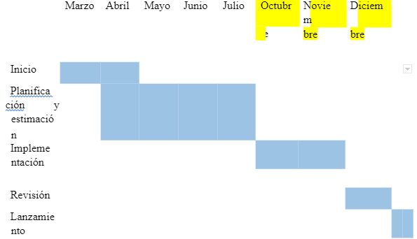

Titulo: PAGIAN WEB INFORMATIVA DESARROLLADA POR LENGIAJE DE PROGRAMACION DE JAVASCRIPT PARA AUTOMATIZAR LOS SERVICIOS DE LA EMPRESA
Integrantes: Chacon Mateo, David Pozo, Kevin Avila, Jhon Godoy
El siguiente proyecto se trata sobre la parte de una problemática muy común a nivel de empresas, dicha problemática tiene que ver con la gestión y difusión de información de los mismos, independientemente del tamaño de la empresa, esta trata de mantenerse competitiva y sobre todo mantener un nivel de información que le garantice la recuperación de la inversión y lógicamente una ganancia dentro de los rangos permisibles. La propuesta de solución planteada va a consistir en la creación y la implementación de una Página web con lenguaje de programación JavaScript utilizando también un lenguaje de etiquetas HTML y un lenguaje de estilos CSS, el cual va a ser desarrollado para que la información de la empresa sea más accesible y concisa para los clientes a su vez dando información sobre los productos y servicios que da la empresa. Para esto se ha de comenzar haciendo la estructura de la página usando las herramientas de Visual Studio Code, un programa que se utiliza para la creacion de codigos HTML, además de aplicar las reglas de estilo CSS, con la implementación del “media querie” para añadir responsividad a la página, pero para tener una mejor idea de cómo queremos que quede nuestra página web, se utilizará el programa Figma, gracias a este programa podremos diseñar el diseño de como se verá. También se implementará el uso de GitHub, el cual se usará como un medio para compartir los cambios realizados desde diferentes máquinas del código HTML entre los miembros del equip
-El tema a investigar es sobre la empresa Estrual y los servicios que ofrece, como también en cómo le afecta no tener una página web oficial que automatice sus servicios de forma virtual y concisa.
-No ha tenido una página web, desde el momento en que entró en funcionamiento, por eso se está creando una página web, para poder automatizar los servicios que ofrece la empresa, de forma presencial o no presencial.
-Desarrollar una página web informativa para la empresa Estrual desarrollada por lenguaje de programación JavaScript para automatizar los servicios de la empresa. Objetivo específico -Implementar un servicio automatizado para la empresa. Metodología -La página web será desarrollada mediante o siguiendo las bases de la metodología scrum.
Desarrollar destreza y habilidad mínimas con el lenguaje de programación JavaScript.
-Página web, Empresa, Cuenca, Lenguaje JavaScript
-El siguiente proyecto que se va a realizar se trata de una página web informativa empresarial Estrual, como una forma de automatizar los servicios de esta.
-Desde el momento de su fundación la empresa no ha sido del todo reconocida, ya que no se ha adaptado a los cambios modernos del internet, con esta página web se busca promocionar sus servicios.
-Nacional: hay diversas empresas que ofrecen el mismo servicio y que cuenta con una página web. -Local: no hay mucha clientela que busque los servicios que ofrece en parte debido a que son desconocidos. Experiencias realizadas anteriormente para resolver el problema identificado.
Implementación de un plan marketing digital para incrementar el nivel ventas en una empresa de transporte interprovincial del Perú (Machaca Cornejo, 2018) Plan de marketing digital para incrementar el nivel de ventas en una empresa de transporte interprovincial del Perú. Este, logrará que la empresa mejore la calidad atención y ventas, generado por la publicidad de las redes sociales, posicionamiento en buscadores y sitio web de la empresa.
Desarrollo e implementación de una página web con Chatbot, para el proceso de solicitud de exámenes de laboratorio de la empresa “SANLAC S.A.” (Sánchez Díaz, 2021) Analizo las necesidades respecto al proceso de consulta de exámenes, identificando los servicios más solicitados por parte de los clientes, donde se diseña mediante diagramas de casos de uso, los procesos y participantes que intervienen en el modelo de negocio de la entidad médica, donde se crea el sitio web.
Creación de la página web para la Carrera de Comunicación de la Universidad Politécnica Salesiana sede Cuenca (Ortiz Siguencia, 2020) El documento consiste en la creación de una página web para la Carrera de Comunicación. El mismo que tiene como objetivo llegar a todo público teniendo como base información elemental y necesaria como contenidos multimedia, académicos y de investigación
La necesidad identificada del porqué se está creando esta página web,
sería que la empresa desea poder dar a conocer sus servicios de forma
concisa y ordenada a la clientela en general. Para ello se han fijado
varios objetivos para averiguar si es factible realizar el proyecto.
1: Totalmente de acuerdo
2: De acuerdo
3: Ni de acuerdo ni en desacuerdo
4: En desacuerdo
5: Totalmente en desacuerdo
Su importancia está en que la empresa Estrual no tiene una página web que le permita mostrar su contenido de una forma más personalizada, la investigación trata de cubrir ese ámbito.
La investigación cubre un interés tecnológico de la empresa Estrual, una página web que difunda los servicios que ofrecen y fotos de ejemplo.
La empresa Estrual debido a que carece de una página web hace que sus servicios no puedan presentarse de forma más personalizada y detallada. aunque el aumento del uso de redes sociales hace que una página web sea prescindible, estas redes no permiten la personalización y el detalle que puede otorgar una página web, la página web puede presentar el contenido de forma concisa y directa al usuario.
Crear una página web para la empresa Estrual. Presentar los servicios de la empresa de forma concisa. Demostrar la utilidad de una página web.
¿mejorará la página web la difusión de la empresa Estrual? ¿la página web presentará los servicios de la empresa de forma concisa?
Utilizar herramientas que ayuden en la creación de página web Se hará un proceso de investigación de distintas páginas web informativas, y así aplicar el mejor modelo de presentación Presentar una mejora en las cifras y percepción de la empresa Estrual. PLAN DE TRABAJO (Gráfica de Gantt) Se presentan las actividades a desarrollar durante la investigación y el tiempo que demanda su realización. Tome en cuenta el 4to y 5to ciclo.
Es el marco general de las fundamentaciones teóricas y conceptuales en la cual se desarrolla el estudio. Se debe explicitar la concepción de persona que enmarcara la investigación y, finalmente, se deben precisar los conceptos relevantes del estudio. Este marco referencial comprende:
El marco teórico es la fundamentación epistemológica dentro de la cual se enmarcará la investigación que va a realizarse. Es decir, es una presentación de las principales escuelas, enfoques o teorías existentes sobre el tema objeto de estudio, en que se muestre el nivel del conocimiento en dicho campo, los principales debates, resultados, instrumentos utilizados, y demás aspectos pertinentes y relevantes sobre el tema de interés.
Es la definición precisa de conceptos relevantes. En un mundo cada vez más especializado es necesario precisar los distintos conceptos utilizados en cada campo del saber. Toda investigación necesita precisar sus conceptos básicos. Elaborar un marco conceptual no es hacer una lista de términos relacionados con un tema, si no definir lo que por su significado particular necesita precisarse en su definición.
Describe el diseño del trabajo, área de estudio, técnicas e instrumentos
que se utilizarán y los procedimientos empleados para la obtención y
análisis de datos.
Esta sección debe incluir toda la información necesaria para que
cualquier otro investigador pueda replicar el estudio sin dificultades.
Se debe mencionar explícitamente qué actividades se realizarán para
cumplir con los objetivos planteados.
Para el desarrollo de la aplicación web para el impulso de los
emprendimientos en la ciudad de Cuenca, se utilizó la metodología Scrum
Etapa I Inicio:
Constituye la descripción, realización y desarrollo del producto o
modelo teórico propuesto. Es la parte más importante ya que aquí se
presenta la novedad y el aporte del autor o autores.
Una vez que el estudiante ha investigado sobre su variable
independiente, es decir su objeto de estudio, está en la capacidad de
proponer una solución para eliminar o aliviar el problema, esta solución
que él recomienda es lo que se conoce como propuesta.
Nota: La propuesta debe ser planteada y desarrollada a nivel
demostrativo o prototipo.
¿A cuáles conclusiones se llegó, de acuerdo con los resultados
obtenidos? Las conclusiones son una parte muy importante del informe
final, deben reflejar los aspectos más sobresalientes del estudio
realizado. Es importante mencionar los objetivos y resultados
alcanzados.
Cada conclusión puede comprender una síntesis de cada tema o capítulo.
¿Cuáles recomendaciones pueden darse para ayudar a solucionar el
problema?
Son de significativa importancia, se realizan en torno a los resultados
del trabajo, pueden reflejar situaciones inconclusas o acciones futuras
para su aplicación, surgen de cada conclusión.
Estas aparecen al final del texto, y sólo se referencian las fuentes que fueron consultadas y citadas en el trabajo. En esto se debe ser muy cuidadoso puesto que algunas omisiones en los datos pueden suponer vicios formales. Vale destacar que, la utilización de palabras o conceptos de otro autor o autora, sin señalar la fuente, implica deshonestidad y carencia absoluta de seriedad científica. Su presentación debe estar en orden alfabético.
Ministerio de Salud Pública del Ecuador (2020): CORONAVIRUS COVID 19.
Consultado en: https://www.salud.gob.ec/coronavirus-covid-19/ en fecha
27 de mayo de 2020.
Guillen Peñarreta, J. P., & Vizhñay Aguilar, C. F. (2016). Gafas
especiales para detección de obstáculos con sistema de ubicación en caso
de emergencia y ayuda de reconocimiento de billetes para personas con
discapacidad visual (Bachelor's thesis).
Espada, J. P., Orgilés, M., Piqueras, J. A., & Morales, A. (2020). Las
buenas prácticas en la atención psicológica infanto-juvenil ante el
COVID-19. Clínica y Salud. Avance online.(Revisado 3 mayo 2020).
https://doi. org/10.5093/clysa2020a14.
Casero-Ripollés, A. (2020). Impacto del Covid-19 en el sistema de
medios. Consecuencias comunicativas y democráticas del consumo de
noticias durante el brote. El profesional de la información (EPI),
29(2).